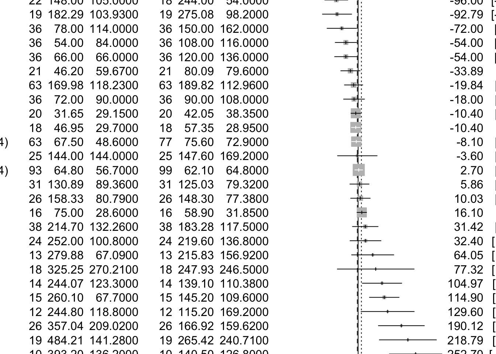
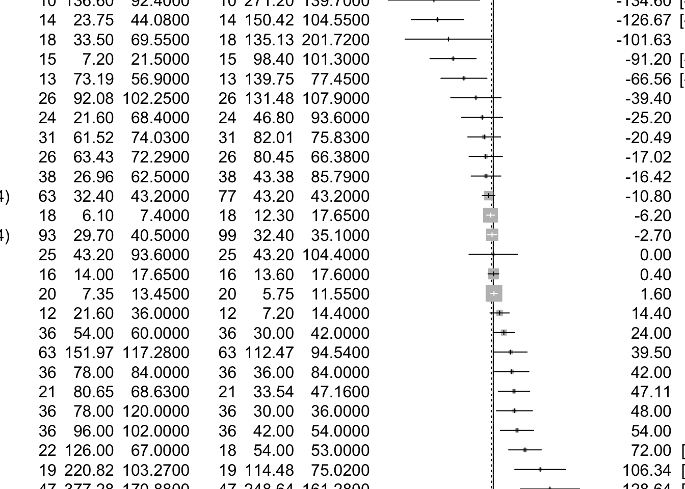

The study looks at various studies of children choosing what kind of toys they play with (stereotypically ‘boy-toys’ or stereotypically ‘girl-toys’). Mean times (in seconds) of playing are recorded, along with sample sizes and standard errors (for boys playing with each kind of toys and for girls playing with each kind of toys).
There’s also information about the studies (e.g. year) and a bit about quality.
Here’s authors’ descriptions to the data:
Neutral toys (1 = neutral toys included; 2 = neutral toys not included); Parent present (1 = absent; 2 = minimal interaction; 3 = moderate or full interaction); Setting = location of study (1 = home; 2 = laboratory; 3 = nursery); Country = gender inequality index, a measure of how gender egalitarian the country was at the time the study took place.
Note. Quality is assessed using Newcastle–Ottawa Quality Assessment Scale criteria adapted for this study. A star indicates that the study fulfilled this criterion; an X indicates that the study did not fulfil this criterion. Case definition adequate: clear justification for the gendered nature of a toy, for example, based on research. Representativeness of cases: recruitment of consecutive participants. Selection of controls: whether boys and girls were comparable in terms of social background. Parental opinion: whether parents’ views on gender were measured. Comparability of both groups: the toys were comparable (in size, shape, etc.) and if the boys and girls were comparable in age. Ascertainment of behaviour: Play behaviour was clearly defined. Same ascertainment method for both groups: The measurement of the outcome (time spent playing with toy) was clearly defined. Nonresponse rate: whether either nonuptake or dropout rates reported.
In this study, we plan to use two different sets of variables, first is Mean_boys_play_male and Mean_girls_play_female where later one is control group, second is Mean_boys_play_female and Mean_girls_play_male where later one is control group.
1. First Setting
To combine the effects, we have to get each effect size, however, effect sizes are not calculated but we have the necessary data.
Number of studies combined: k = 27
Number of observations: o = 1610
MD 95%-CI z p-value
Common effect model -3.5717 [-10.7863; 3.6428] -0.97 0.3319
Random effects model 14.3050 [-15.5035; 44.1136] 0.94 0.3469
Quantifying heterogeneity:
tau^2 = 5085.6367 [3081.8461; 13848.4863]; tau = 71.3136 [55.5144; 117.6796]
I^2 = 78.7% [69.5%; 85.1%]; H = 2.16 [1.81; 2.59]
Test of heterogeneity:
Q d.f. p-value
121.78 26 < 0.0001
Details on meta-analytical method:
- Inverse variance method
- Restricted maximum-likelihood estimator for tau^2
- Q-Profile method for confidence interval of tau^2 and tau
With meta package this is very simple. We just put our results into the forest() function:
```{r}m.raw %>%forest(sortvar=TE)```

Most of them are in the centered around true effect, and their standard errors are quite small, some of them are in the right side of true effect and some are in the left. As for checking if methods/quality affect results, we use metareg to do that for us, where we model
```{r}m.raw %>%metareg(`Parental opinion`+`Representativeness of cases`)```
Mixed-Effects Model (k = 27; tau^2 estimator: REML)
tau^2 (estimated amount of residual heterogeneity): 4905.3662 (SE = 1731.3711)
tau (square root of estimated tau^2 value): 70.0383
I^2 (residual heterogeneity / unaccounted variability): 91.68%
H^2 (unaccounted variability / sampling variability): 12.02
R^2 (amount of heterogeneity accounted for): 3.54%
Test for Residual Heterogeneity:
QE(df = 24) = 115.1274, p-val < .0001
Test of Moderators (coefficients 2:3):
QM(df = 2) = 4.3555, p-val = 0.1133
Model Results:
estimate se zval pval ci.lb
intrcpt 50.2872 24.0145 2.0940 0.0363 3.2196
`Parental opinion`X -63.2263 30.2979 -2.0868 0.0369 -122.6091
`Representativeness of cases`X -11.1658 38.1802 -0.2925 0.7699 -85.9976
ci.ub
intrcpt 97.3548 *
`Parental opinion`X -3.8436 *
`Representativeness of cases`X 63.6660
---
Signif. codes: 0 '***' 0.001 '**' 0.01 '*' 0.05 '.' 0.1 ' ' 1
Here, we use Parental opinion and Representativeness of cases, finding that former one has effect on the results with 0.05 as significance level. Regarding authors’ genders,
We here find that authors’ genders do not affect results. Next, we use funnel plot to check for publication bias. Let’s make it a ‘contour-enhanced’ funnel plot:
From funnel plot, we see that most of them are around medium standard errors and scatter around zero difference, which is true effect, and this plot is more or less symmetric, which demonstrates that publication bias is not present regarding this setting.
2. Second Setting
To combine the effects, we have to get each effect size, however, effect sizes are not calculated but we have the necessary data.
Number of studies combined: k = 27
Number of observations: o = 1610
MD 95%-CI z p-value
Common effect model 0.2264 [ -3.7627; 4.2155] 0.11 0.9114
Random effects model -4.2623 [-27.3012; 18.7765] -0.36 0.7169
Quantifying heterogeneity:
tau^2 = 3181.2921 [1976.1324; 8347.9632]; tau = 56.4029 [44.4537; 91.3672]
I^2 = 82.4% [75.4%; 87.5%]; H = 2.39 [2.01; 2.83]
Test of heterogeneity:
Q d.f. p-value
148.07 26 < 0.0001
Details on meta-analytical method:
- Inverse variance method
- Restricted maximum-likelihood estimator for tau^2
- Q-Profile method for confidence interval of tau^2 and tau
With meta package this is very simple. We just put our results into the forest() function:
```{r}m.raw2 %>%forest(sortvar=TE)```

Most of them are in the centered around true effect, and their standard errors are quite small, some of them are in the right side of true effect and some are in the left, so we have the same conclusion as before. As for checking if methods/quality affect results, we use metareg to do that for us, where we model
```{r}m.raw2 %>%metareg(`Parental opinion`+`Representativeness of cases`)```
Mixed-Effects Model (k = 27; tau^2 estimator: REML)
tau^2 (estimated amount of residual heterogeneity): 3317.7195 (SE = 1111.2529)
tau (square root of estimated tau^2 value): 57.5996
I^2 (residual heterogeneity / unaccounted variability): 95.85%
H^2 (unaccounted variability / sampling variability): 24.11
R^2 (amount of heterogeneity accounted for): 0.00%
Test for Residual Heterogeneity:
QE(df = 24) = 137.1299, p-val < .0001
Test of Moderators (coefficients 2:3):
QM(df = 2) = 2.3564, p-val = 0.3078
Model Results:
estimate se zval pval ci.lb
intrcpt -20.6769 18.7962 -1.1001 0.2713 -57.5166
`Parental opinion`X 34.9459 24.1159 1.4491 0.1473 -12.3205
`Representativeness of cases`X -10.5581 30.6253 -0.3447 0.7303 -70.5826
ci.ub
intrcpt 16.1629
`Parental opinion`X 82.2123
`Representativeness of cases`X 49.4665
---
Signif. codes: 0 '***' 0.001 '**' 0.01 '*' 0.05 '.' 0.1 ' ' 1
Here, we use Parental opinion and Representativeness of cases, unlike first setting, we here find Parental opinion is not significant. Regarding authors’ genders,
We here find that authors’ genders do not affect results similar to previous setting. Next, we use funnel plot to check for publication bias. Let’s make it a ‘contour-enhanced’ funnel plot:
From funnel plot, we see that most of them are around medium standard errors and scatter around zero difference, which is true effect, and this plot is more or less symmetric, which demonstrates that publication bias is not present regarding this setting, which is similar as first setting.